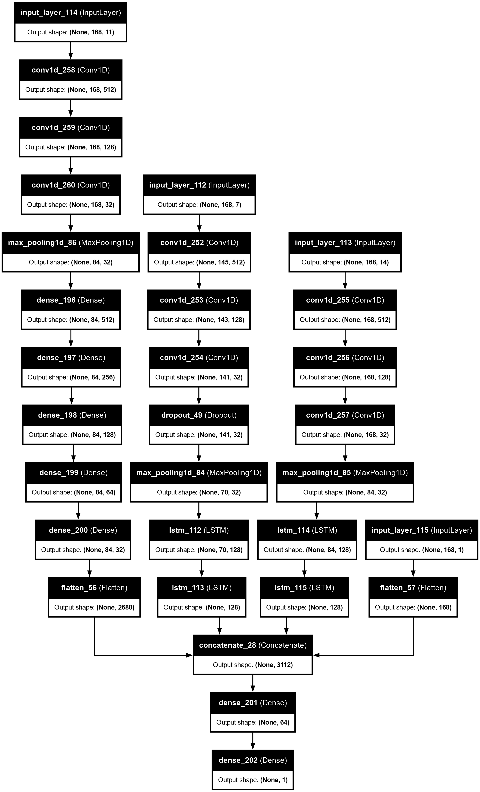
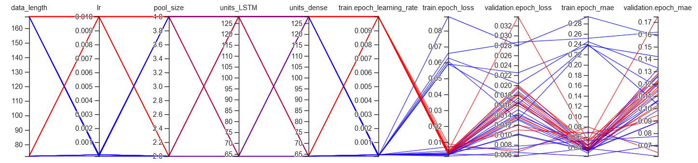
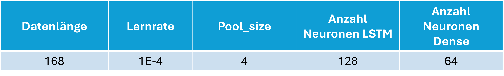
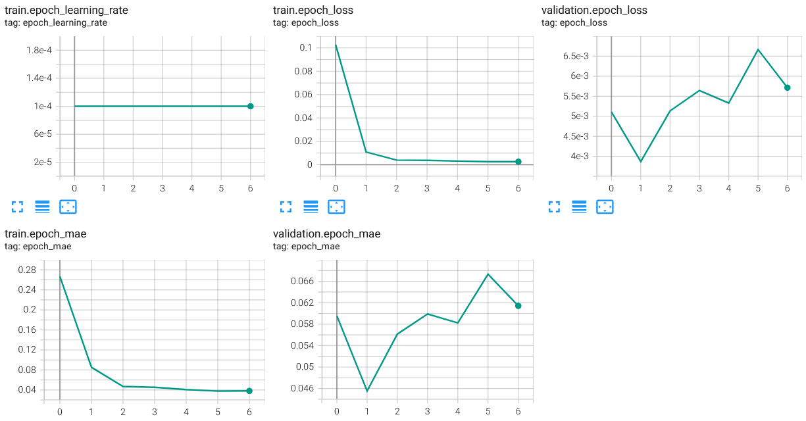
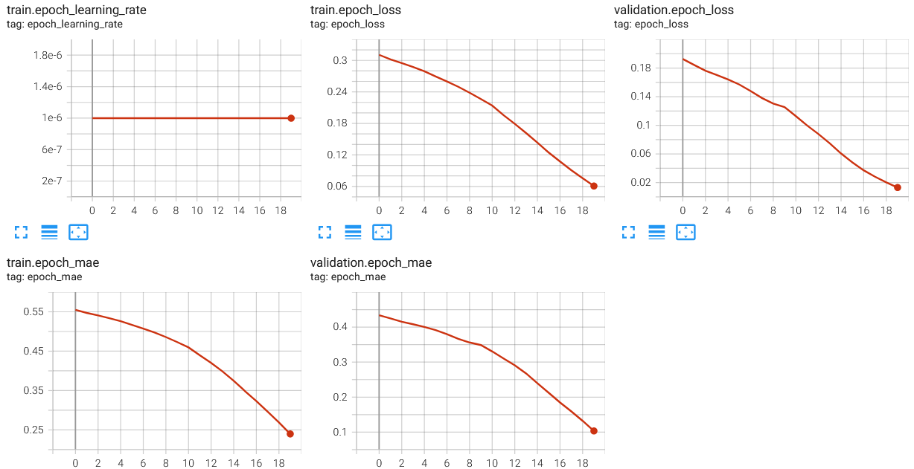
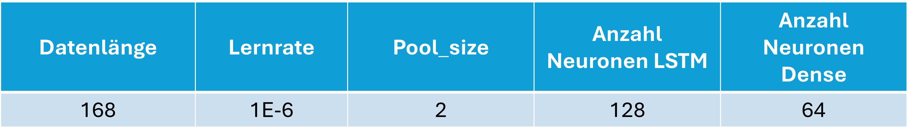
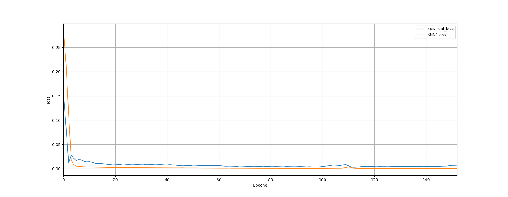
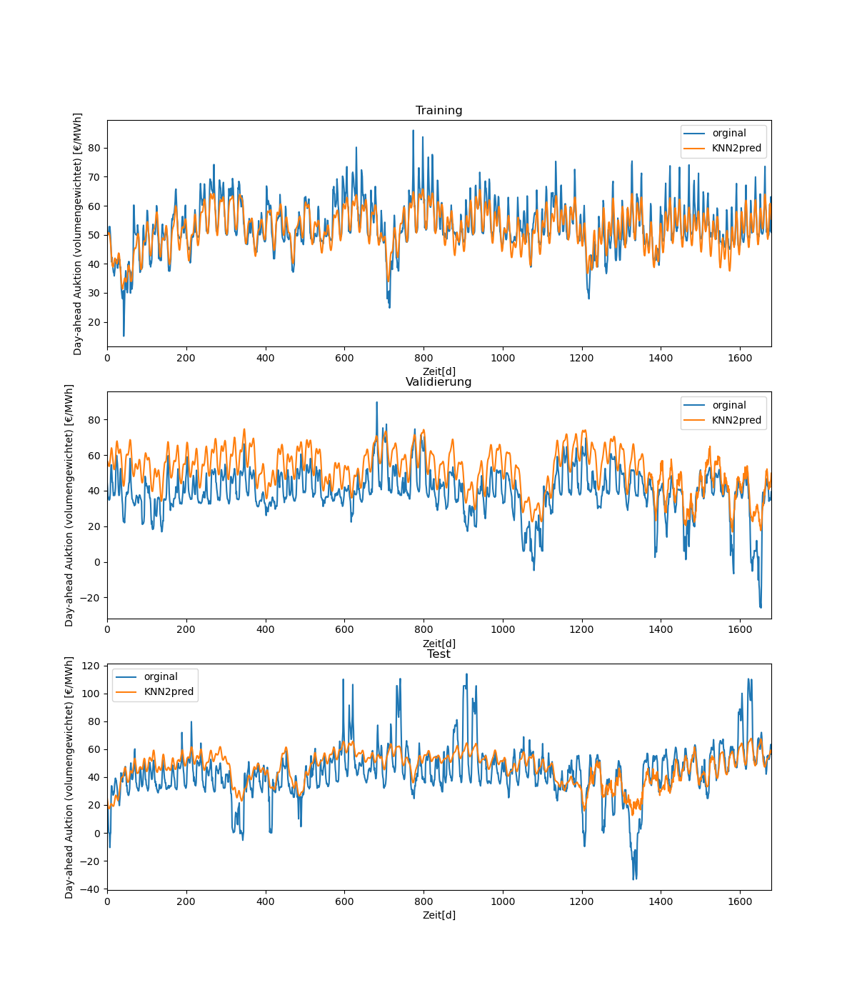
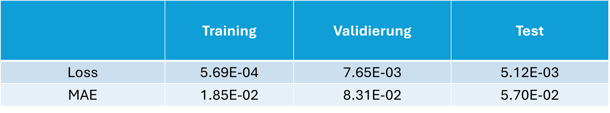

2.1 Kombiniertes Modell zur Ex Post Analyse#
Modellhypothese#
Die Architektur des Modells wird aus den Features abgeleitet. Aufgrund der unterschiedlichen Datenreihen werden vier Inputs gewählt.
Der erste Input beinhaltet die Brennstoffpreise in Ergänzung zu den zeitpunktgebundenen Informationen (Stunde, Wochentag, Monat, Tag des Jahres). Für die Erkennung wiederkehrender Muster werden mehrere CNN-Layer verwendet. Die Anzahl der Layer hat sich aus Probeläufen ergeben. Um eventuelle langfristige Abhängigkeiten zu berücksichtigen, folgt ein LSTM-Layer auf den Pooling-Layer, der die größten Auffälligkeiten der vorangehenden Verarbeitung übernimmt und weitergibt.
Der zweite Input beinhaltet marktbasierte sowie durch Engineering erarbeitete Features. Auch diese Features weisen eine Periodizität auf. Die gemeinsame Verarbeitung mit dem ersten Input führt jedoch zu schlechteren Ergebnissen. Daher wird eine separate Verarbeitung gewählt. Da die Eigenschaften der Daten des zweiten Inputs denen des ersten Inputs ähneln, werden die gleichen Layer zur Verarbeitung verwendet.
Der dritte Input umfasst die Erzeugerdatenreihen. Auch hier haben CNN-Layer zu einer Verbesserung der Prognose geführt, da sie die wiederkehrenden Muster innerhalb eines Tages erkennen. Anschließend werden die Daten in Dense-Layern weiterverarbeitet.
Der vierte Input enthält die Feiertage als statische Daten. Diese werden mit einem Dense-Layer verarbeitet.
Die aus den Inputs verarbeiteten Daten werden in einem Concatenate-Layer zusammengeführt. Anschließend erfolgt eine Feature-Extraktion in einer vorletzten Dense-Schicht, die die Daten an die letzte Schicht übergibt, welche den Output erzeugt. Abbildung 14 zeigt die Modellarchitektur.
 Abb. 14: Modellarchitektur des Ex Post Modells.
Hyperparameteroptimierung#
Für das Modell werden folgende Hyperparameter optimiert.
 Abb. 15: Hyperparameteroptimierung des Ex Post Modells.
Abb. 15: Hyperparameteroptimierung des Ex Post Modells.
Die Ergebnisse der Optimierung zeigen eine deutliche Tendenz der Modelle mit der höheren Lernrate zu Overfitten.
 Abb. 16: Ergebnisse der Hyperparameteroptimierung.
Der Trainingsfehler sinkt sehr stark, während die Validierung stark schwingt, oder in der Qualität abnimmt. Exemplarisch ist das Modell mit dem geringsten Validation-Loss beschrieben von 6.1E-2.
 Abb. 17: Parameter des exemplarischen Modells.
 Abb. 18: Verhalten der Modelle mit höherer Lernrate.
Dem entgegen verhalten sich die Modelle mit niedriger Lernrate (1E-6). Aufgrund der niedrigen Lernrate sind die Validierungsfehler noch höher. Die Tendenz zeigt in der Entwicklung weiter deutlich runter.
 Abb. 19: Verhalten der Modelle mit niedrigerer Lernrate.
Aufgrund der Tendenz des letzten Modells und der ungeeigneten höheren Lernrate wird für folgende Kombination der Hyperparameter entschieden.
 Abb. 20: Parameter des gewählten Modells.
Ergebnisse des besten Modells#
Mit den optimierten Hyperparametern liefert das Modell folgende Ergebnisse bei einem Training über 200 Epochen und einer patience von 50. Die batch_size ist 1680.
 Abb. 21: Verlauf der Fehler des besten Modells.
 Abb. 22: Prognosen der Training, Validierung und Test-Daten.
 Abb. 23: Ergebnisse der Training, Validierung und Test-Daten.
Modellvalidierung und Bewertung#
Zur Prävention von Overfitting wurde in einer Verarbeitungslinie ein Dropout Layer eingebaut. Bei mehr Dropout Layern wurde das Preisniveau bei den Trainingsergebnissen dauerhaft unterschätzt. Der Verlauf der Fehlerkurven deutet darauf hin, dass die Maßnahme ausreicht. Die Trainingsergebnisse sehen vom Verlauf sehr gut aus. Der Preis kann dauerhaft präzise rekonstruiert werden. Lediglich die starken Preisspitzen werden unterschätzt.
Die Validierungsprognosen nehmen entsprechend des Loss und MAE in der Qualität ab. In diesem Fall werden die Spitzen überschätzt. Die Täler werden überschätzt. Das Modell liefert ein ungefähres Preisniveau, aber keine präzisen Prognosen.
Die Abnahme der Prognosequalität hält bei den Prognosen der Testdaten an. Die Prognosen liefern einen gemittelten Wert. Dieser liegt in der Tendenz leicht über dem tatsächlichen Preisniveau.
Von den Prognosen des Ex Post Modell haben wir uns mehr erhofft. Es liefert ein ungefähres Preisniveau. Es ist dem Modell jedoch nicht gelungen den Preis zu rekonstruieren.
Im Folgenden werden mögliche Ursachen genannt.
1. Features
Einige der Features beinhalten durch das Engineering identische Faktoren. Möglicherweise ist eine Redundanz gegeben, welche die Qualität der Generalisierung negativ beeinflusst. Eine Überprüfung auf Redundanz und die Reduktion redundanter Features wäre eine geeignete Maßnahme. Darüber hinaus scheint ein Einflussfaktor für die Preisspitzen nicht eindeutig durch die Kombination der Features gegeben zu sein. Hier wäre eine weitere Feature Analyse und Anpassung sinnvoll
2. Modellarchitektur
Die Modellarchitektur ist komplex. Aufgrund des hohen Rechenaufwands war es nicht möglich alle Kombinationen von Hyperparametern zu optimieren. Einzelne Durchläufe als Qualitätsvergleich haben beispielsweise zu den Kernel_size und filters bei den CNN-Layern geführt. Hier gibt es sehr wahrscheinlich Kombinationen mit besseren Ergebnissen, die mit passender Hardware und Zeit gefunden werden könnten. Darüber hinaus gibt es mit Sicherheit Modellarchitekturen, die besser geeignet sind. Trotz der Komplexität muss diese Architektur nicht die Beste sein.
3. Inputs
Die Auswahl der Features für die Inputs ist systematisch, wie zu Beginn des Kapitels beschrieben, erfolgt. Möglicherweise gibt es auch hier Kombinationen, welche eine bessere Generalisierung ermöglichen.
4. Hyperparameter
Wie bereits erwähnt, wurden nicht alle Hyperparameterkombinationen getestet. Bei den gewählten Hyperparametern existieren noch endlos weitere Einstellungen.